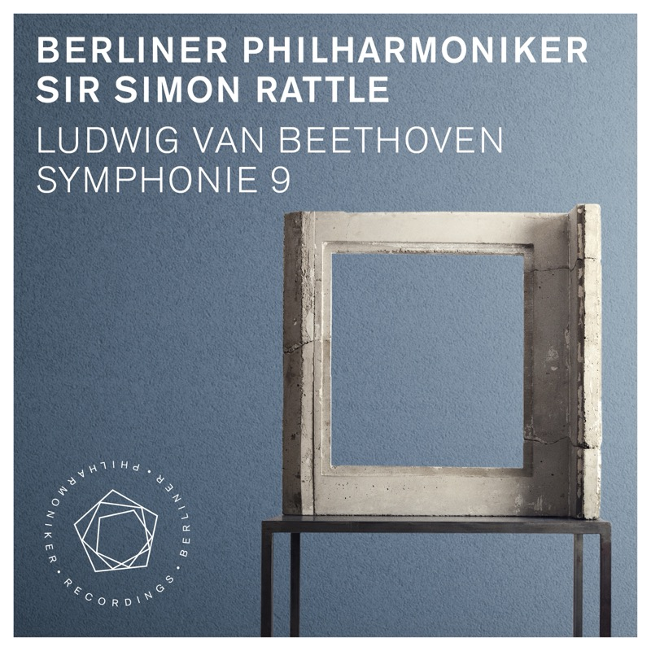

Beethoven: Symphony No. 9 in D Minor, Op. 125 贝多芬：d 小调第九交响曲
Annette Dasch · Eva Vogel · Christian Elsner · Dimitry Ivashchenko · Rundfunkchor Berlin
一部还在慢慢接近的作品：尝试在听，但还不是非常能吸引人，反倒是同一时期听的纪录片配乐更容易打动。录进 MD，是想多给它一点时间。进入它的一个办法，是先抓住情感的层次：第一乐章的不屈，第三乐章的抒情恬静，最后在合唱的颂歌里把情感和想象推到顶点。如果喜欢的是宏大的氛围，可以把贝多芬的交响曲和霍尔斯特的《行星组曲》放在同一条路上听。这里是拉特尔与柏林爱乐 2015 年的现场录音。
Tracks
- 01I. Allegro ma non troppo e un poco maestoso15:20
开头是弦乐的空五度震音，调性一时听不出来，主题像从虚空里一点点凝聚出来。这一乐章可以听它那种不屈的精神。
- 02II. Molto vivace - Presto - Molto vivace - Presto13:33
- 03III. Adagio molto e cantabile15:55
整部交响曲里最安静的地方：抒情、恬静，两个主题交替变奏，木管和弦乐彼此应答。放在激烈的谐谑曲之后，像一次长长的喘息。
- 04IVa. Presto6:06
- 05IVb. Presto - Recitativo "O Freunde, nicht diese Töne!"16:58
男中音一句“O Freunde, nicht diese Töne!”（朋友们，不要这些声音！）把人声带进交响曲，接着独唱四重唱和合唱唱出席勒的《欢乐颂》，情感在这里被推到顶点。
Credits
- Ludwig van Beethoven — composer
- Friedrich Schiller — text (“An die Freude”)
- Sir Simon Rattle — conductor
- Berliner Philharmoniker
- Annette Dasch — soprano
- Eva Vogel — mezzo-soprano
- Christian Elsner — tenor
- Dimitry Ivashchenko — bass
- Rundfunkchor Berlin · Simon Halsey — chorus master
Notes
这部交响曲
1824 年在维也纳首演，是贝多芬的最后一部交响曲。它打破了古典交响曲的常规：谐谑曲被提到第二乐章，慢板放到第三乐章；终乐章加入独唱四重唱和合唱，唱的是席勒的诗《欢乐颂》。交响曲里加进人声，在当时是开先河的做法。两百年来，它一直是全世界最有象征意义的作品之一，被称作“全人类的同一首歌”。
一种听法：从终乐章往回听
终乐章开头有一段很特别的设计：低音弦乐像宣叙调一样说话，前三个乐章的主题片段轮流闪回，又一个个被打断、否定；然后《欢乐颂》的旋律才由低音弦乐轻轻奏出，一层层加入别的声部，最后男中音开口唱“朋友们，不要这些声音”。整部交响曲可以理解为一次从黑暗走向欢乐的寻找。觉得前面难以进入时，不妨先熟悉终乐章，知道它最后要去哪里，再回头听第一乐章那片空五度的混沌。
这个录音
拉特尔 2002 年到 2018 年任柏林爱乐首席指挥。这套贝多芬交响曲全集于 2015 年 10 月在柏林爱乐音乐厅现场录制，同年乐团还带着这套全集去了巴黎、维也纳和纽约，由乐团自己的厂牌 Berliner Philharmoniker Recordings 出版。第九的独唱是女高音 Annette Dasch、次女高音 Eva Vogel、男高音 Christian Elsner 和男低音 Dimitry Ivashchenko，合唱是柏林广播合唱团（Rundfunkchor Berlin），合唱指导 Simon Halsey。